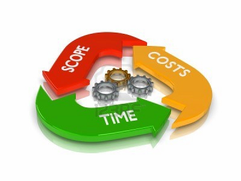

Proceso secuencial
En este ejemplo no hay solapamiento
| z, ? | toggle help (this) |
| space, → | next slide |
| shift-space, ← | previous slide |
| d | toggle debug mode |
| ## <ret> | go to slide # |
| c, t | table of contents (vi) |
| f | toggle footer |
| r | reload slides |
| n | toggle notes |
| p | run preshow |
| P | toggle pause |


TTPS - Opcion
Ruby por Christian A. Rodriguez se encuentra bajo
una Licencia
Creative Commons Atribución-NoComercial-CompartirIgual 3.0 Unported.


Pero... ¿Cómo planificar sin saber qué hacer?

¿Si deseamos obtener validaciones frecuentes con el cliente?
 ¿Y con pruebas de regresión entre iteraciones?
¿Y con pruebas de regresión entre iteraciones?